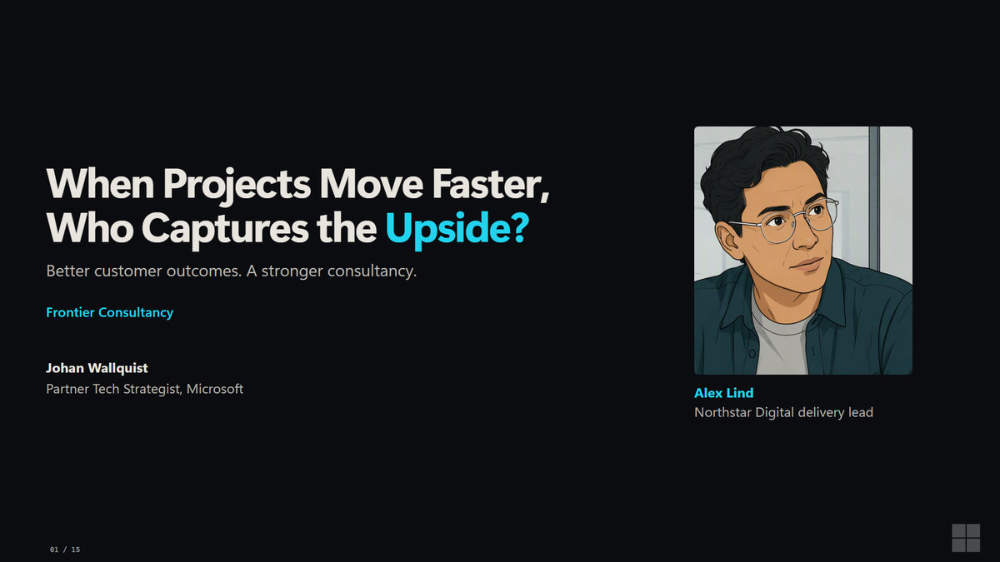

When Projects Move Faster, Who Captures the Upside?
Repeatable work is how your practice scales.
v0.11 · Audience edition · Archived release

Repeatable work is how your practice scales.
v0.11 · Audience edition · Archived release